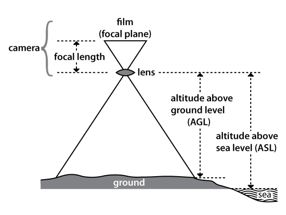

GEOG*2420 The Earth From Space (F19)
Lab Assignment 2: Air Photo iInterpretation and Photogrammetry
Introduction
The intention of this lab exercise is to familiarize students with the concepts of photo scale and image resolution and to introduce them to the various methods of calculating scale and resolution. Students will also practice the skills of air photo interpretation.
Readings and Resources
The following materials, combined with your textbook, can be used as background materials and to help in answering the assignment questions.
-
Weng Q. 2012. An Introduction to contemporary remote sensing, Chapters 4 and 5.
-
Airphoto Geometry. Available online: http://www.engr.usask.ca/classes/GEOE/218/notes/airphoto_reading/apg.htm.
Before you begin
IMPORTANT INFORMATION: The computers in the Geography Undergraduate Computing Lab (Hutt 236), have QGIS and WhiteboxTools installed. If you are planning to carry out these assignments on your own computer, then it is important that you have QGIS, with the WhiteboxTools For QGIS toolbox. This software is open-source, freely available, and works on Windows, MacOS, and Linux operating systems. It can be downloaded from the Internet and instructions can be found on the QGIS homepage (link provided above). For instructions on the installation of the WhiteboxTools plugin for QGIS, please see the WhiteboxTools User Manual.
In addition to the software, you will need to download the data associated with this lab exercise from the CourseLink page under the Lab 2 directory. The data for this laboratory is quite large and will require substantial data storage. It is advisable that you purchase a USB flash drive to dedicate to this course and to serve as the data backup. It is important that you backup all of the data for the lab assignment.
What you need to hand in
You will hand in a printed report summarizing the answer to each of the questions in the following exercise along with the necessary colour images. For each of the calculations in this lab, be sure to show your intermediate steps, explicitly stating units and any unit conversions.
Common units and transformations
- 1 metre = 100 centimetre = 1,000 millimetres
- 1 foot = 12 inches, 1 yard = 3 feet
- 1 metre = 3.28 feet, 1 inch = 25.4 millimetres
Background Material
The scale of an image can be used to relate distances measured on the photo to equivalent ground distances. The photo scale is the ratio of the distance between two points on a photo to the actual distance between the same two points on the ground (i.e. 1 unit on the photo equals "x" units on the ground). It is usually expressed as a Representative Fraction (RF), e.g. 1 / 24,000, or equivalently 1 : 24,000. Notice that to calculate the scale, both the photo distance and the ground distance must be in the same units. Since a representative fraction always has one as the numerator, it is sometimes useful to talk about the Photo Scale Reciprocal (PSR), which is 1 / RF. This a photo with a scale of 1 : 24,000 has a PSR of 24,000. Given the following geometry:

(source: Natural Resources Canada)
It can be determined that the ratio of the footprint of the photo on the ground to the size of the photograph (marked as focal plane in diagram), is equivalent to the ratio of the altitude of the aircraft above the ground level (AGL) to the focal length (f). The focal length of a camera is the distance from the middle of the camera lens to the focal plane (i.e. the film) and it is a very important parameter of a camera. As focal length increases, image distortion decreases, which is one reason why the cameras used in aerial photography tend to have very large focal lengths (e.g. 6 inches to 12 inches). The focal length of a camera used in aerial surveys is measured when the camera is calibrated to a very high level of precision. Now we can state that RF = f / AGL and PSR = AGL / f. When we know the focal length of the camera used to capture an image as well as the flying height (usually we have the ASL and need to subtract the ground elevation, E, to get the AGL) we can easily calculate the photo scale.
Unfortunately, often we don't have both the focal length and flying height. In such cases we can calculate the photo scale by measuring the distance between two points in the photo and the corresponding distance on a map (i.e. the ratio of photo distances and ground distances). In applying this method of calculating scale, the two points used for distance calculations should be positioned such that that a line connecting them passes near the principal point (PP), or image centre. They should be approximately equidistant from the PP. Longer distances are preferred, as are lines with relatively flat terrain. The points that you use to measure the distance between should be located on the ground surface and not on any kind of building or other structure. In this way, it is possible to calculate the scale with minimal impact from error due to relief displacement and the effects of image tilt.
The concept of photo scale makes sense for hard-copy aerial photographs, but it is less meaningful for digital, or softcopy, imagery. For example, if you display the same image on a 27 inch monitor and an 18 inch monitor, the image will be at a different scale. Similarly, if you zoom into or out of the image, again the photo scale will change. In this case, the concept of image resolution is more intuitive. Image resolution is the size of a pixel in terms of its ground dimensions. It is usually presented as a single value that represents the length of one side of a square pixel (although rectangular pixels, where the resolution in the horizontal and vertical directions are different, are possible too).
The resolution, like the photo scale, is a measure of the amount of detail contained in an image. It is related to the information content of the image. The finer the resolution (e.g. a 5 m grid compared to a 50 m grid) the greater the detailed captured. Similarly, the larger the photo scale (e.g. RF 1 : 5000 compared to 1 : 100,000) the greater the image detail. (IMPORTANT NOTE: A scale of 1 : 100,000 is smaller than a scale of 1 : 5000 because the number 1/100,000 is smaller than 1/5000).